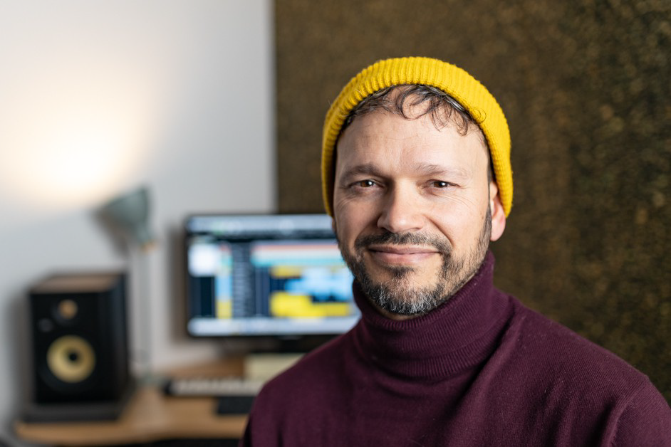

Alvaro Trillo

Summary
I am a lifelong learner. After a long hiatus dedicated to music, I am returning to software development.
Work experience
- From 2006 to Now: Musician, Music Composer & Music Teacher
- From 6-2005 to 2-2006: Junior Developer at Softtek (for GE): JAVA (S uts, JavaBeans,...), JAVASCRIPT, ORACLE
- From 11-2003 to 5-2005: Junior Developer at Softgal (for Caixa Galicia): PL1, DB2, CICS, NSDK
Education
- 2017-2018: University Master in High School Education
UNIVERSIDAD INTERNACIONAL DE VALENCIA
Music speciality
- 2010–2016: Superior Music Grade
CONSERVATORIO SUPERIOR DE MÚSICA, A Coruña
Jazz-Drums speciality
- 1998- 2002: Computer Engineering
FACULTADE DE INFORMÁTICA, A Coruña
Skills
Computing Skills
- Primary Languages: Java, PL/1
- Other Languages: HTML/CSS/Javascript, Python, Perl, C, C#, VB, Cobol, Fortran, Matlab,
Pascal
- Databases: Oracle, DB2, Mysql
- Frameworks: Django, Spring
- Environment Items: Eclipse, Github, IntelliJ, PyCharm, CICS
Languages
- English: Conversation level
C1 in Trinity College
C calification in the British Council Aptis
- French: Mother tongue, DALF-C1 Alliance Française
- Spanish: Mother tongue
- German: Basic level
- Galician: Mother tongue, CELGA-4
My Hobbies
Contact